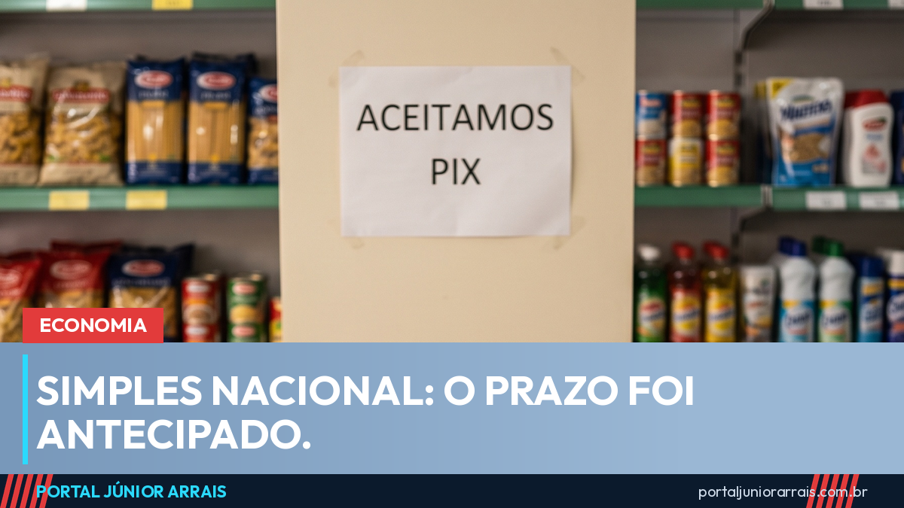
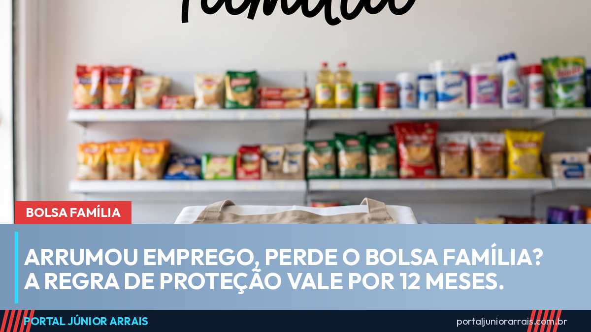
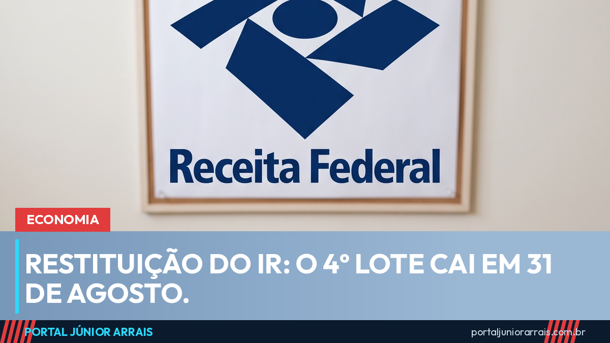
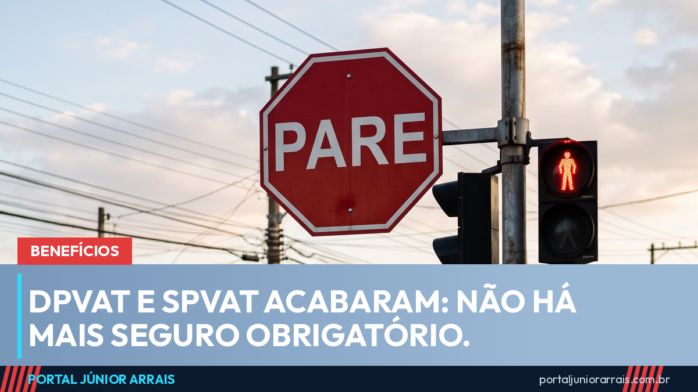

PUBLICIDADE

Calendário do INSS de setembro: veja a data do seu pagamento pelo final do benefício

Igualdade salarial: prazo vai até 31 de agosto e mulher ainda ganha 21,3% menos
Como pagar o INSS sem perder o Bolsa Família em 2026: veja o passo a passo
Inscreva-se no canal → Saúde mental no trabalho: a regra está valendo, mas o STF suspendeu as multas
Maria da Penha faz 20 anos e presidente do STM defende justiça comum para militar
Jovem negro tem menos carteira assinada e mais bico, mostra pesquisa
Seis crianças morrem por dia de forma violenta no Brasil, aponta o Unicef
Saúde mental no trabalho: a regra está valendo, mas o STF suspendeu as multas
Maria da Penha faz 20 anos e presidente do STM defende justiça comum para militar
Jovem negro tem menos carteira assinada e mais bico, mostra pesquisa
Seis crianças morrem por dia de forma violenta no Brasil, aponta o Unicef

Simples Nacional 2027: prazo para entrar no regime foi antecipado para setembro Dívida rural: CMN flexibiliza renegociação e agricultor familiar entra nas novas regrasYouTube Shorts
Ver todos → Dinheiro que circula na conta não pode ser considerado renda para o Bolsa Família ou BPC/LOAS
Dinheiro que circula na conta não pode ser considerado renda para o Bolsa Família ou BPC/LOAS
 Bolsa Família: “minha vizinha recebe mais do que eu, qual motivo disso?” entenda como funciona
Bolsa Família: “minha vizinha recebe mais do que eu, qual motivo disso?” entenda como funciona
 Sábado de pagamento do Bolsa Família! Já recebeu antecipado aí?
Sábado de pagamento do Bolsa Família! Já recebeu antecipado aí?
 Lista de todos os estados que pagam benefícios além do Bolsa Família! Você recebe algum?
Lista de todos os estados que pagam benefícios além do Bolsa Família! Você recebe algum?
 Pé-de-Meia: pagamento dobrado em agosto? O que aconteceu?
Pé-de-Meia: pagamento dobrado em agosto? O que aconteceu?
Últimas notícias

Bolsa Família
Arrumou emprego, perde o Bolsa Família? A regra de proteção vale por 12 meses

Economia
Restituição do IR: 4º lote libera consulta e o dinheiro cai em 31 de agosto
INSS
Prova de vida do INSS: o que já conta sozinho e quando o benefício pode ser bloqueado

Benefícios
Passe Livre interestadual muda: acaba o laudo do SUS e a credencial vira digital

Benefícios
DPVAT e SPVAT acabaram: hoje não existe seguro obrigatório para vítima de trânsito
INSS
13º do INSS: quem começou a receber depois de maio só recebe em novembro
Vídeos em destaque
Ver todos →Me acompanhe nas redes sociais
Siga o Portal Júnior Arrais para receber notícias e vídeos novos todos os dias.